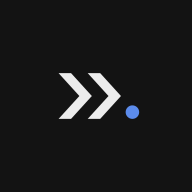

Emblematy środowisk, ikona aplikacji, favicon
System godeł pochodnych zbudowany wyłącznie z zatwierdzonej geometrii: sygnetu „Delegacja” na siatce 96 × 96 i czterech emblematów środowisk na siatce 24 × 24. Nie powstał tu ani jeden nowy znak — powstały warianty, konfiguracje i zastosowania. Krzywe pozostały nietknięte.
System godeł — trzy piętra
Znak marki nie stoi sam. Rozgałęzia się w rodzinę godeł pochodnych, w której każde piętro cytuje piętro wyższe i żadne nie cytuje niższego.
Żywe porównanie trzech pięter
Trzy znaki na tej samej siatce renderowania. Różnica jest jedna: obecność wypełnionej kropki. Ikona modułu jej nie ma — i dlatego nie należy do rodziny godeł.
Hierarchia jest jednokierunkowa. Emblemat cytuje sygnet (kropka), ikona modułu nie cytuje niczego (jest słownikiem), ikona aplikacji jest oprawą sygnetu — nie osobnym znakiem.
Wspólna gramatyka
Pięć wielkości łączy wszystkie cztery emblematy. Włącz nakładkę, żeby zobaczyć siatkę 24 × 24, osie i pas, w którym leżą kropki satelickie.
| # | Element | Wartość | Zakres |
|---|---|---|---|
| 1 | Siatka | 24 × 24 j. | emblematy + ikony modułów (sygnet: 96 × 96 = czterokrotność) |
| 2 | Obrys | 1,75 j. · round | emblematy + ikony modułów |
| 3 | Wypełnienie | none | wszystkie kształty obrysowe |
| 4 | Barwa | currentColor | jedna barwa na cały znak — także kropka |
| 5 | Kropka sygnału | dokładnie 1 | wyłącznie emblematy i sygnet — ikony modułów jej nie mają |
Cztery emblematy — konstrukcja
Metafora, konstrukcja, położenie jedynej wypełnionej kropki i miejsca zastosowania. Każdą kartę można skopiować jako gotowy SVG do wklejenia inline.
Drabina rozmiarowa 16–64 px
Sześć stopni w realnej skali, na obu planszach. Warianty 16 px są uproszczone — najdrobniejszy element ustępuje, kropka zostaje i rośnie.
Kompensacja obrysu poniżej 24 px
| Render | Obrys (j.) | Obrys efektywny | Ø kropki | Detal |
|---|---|---|---|---|
| 16 px | 1,90 | 1,27 px | 2,4–4,0 px | uproszczony |
| 20 px | 1,90 | 1,58 px | 2,50 px | pełny |
| 24 px | 1,75 | 1,75 px | 3,00 px | kanoniczny |
| 32 px | 1,75 | 2,33 px | 4,00 px | pełny |
| 48 px | 1,75 | 3,50 px | 6,00 px | pełny — Ø kropki = żeton --dn-wym-kropka |
| 64 px | 1,75 | 4,67 px | 8,00 px | pełny |
Co ustępuje przy 16 px
| Emblemat | Element usunięty | Korekta kropki | Powód |
|---|---|---|---|
| TalkIn | górna (dłuższa) linia tekstu | r 1,5 → 1,9 | para „linia + kropka” niesie znaczenie; jedna linia wystarczy |
| WorkSpace | obrys czwartego modułu | r 1,6 → 3,0 | przy 3,3 px wnętrza obrys i kropka sklejają się w plamę |
| CodeStudio | linia wyniku pod grotem | r 1,5 → 1,85 | luz kropka–ramka rośnie z 0,225 do 0,60 j. |
| MultitaskingAI | nic | r 2,6 → 2,9 | trzej wykonawcy to fakt produktowy, nie ozdoba |
Prawo kropki
Trzy z czterech kropek leżą w pasie x ∈ [16,2 ; 18,4] — 9,2 % szerokości
znaku. Czwarta stoi dokładnie na środku siatki. To reguła z jednym umotywowanym wyjątkiem.
| Emblemat | cx | cy | r | Ø | Odl. od środka siatki | Rola kropki |
|---|---|---|---|---|---|---|
| TalkIn | 16,2 | 10,8 | 1,5 | 3,0 | 4,36 j. | odpowiedź w toku, na osi drugiej linii |
| WorkSpace | 16,9 | 16,9 | 1,6 | 3,2 | 6,93 j. | środek modułu aktywnego — co do jednostki |
| CodeStudio | 18,4 | 9,9 | 1,5 | 3,0 | 6,73 j. | proces w tle, prawy górny róg okna |
| MultitaskingAI | 12,0 | 12,0 | 2,6 | 5,2 | 0,00 j. | rdzeń koordynatora — nie satelita |
Zbieżność strukturalna. Kropka satelicka ma Ø 3 j. na siatce 24.
Wyrenderowana w 48 px daje dokładnie 6 px — czyli żeton
--dn-wym-kropka. Kropka emblematu jest tą samą kropką, którą interfejs stawia
przy karcie sesji i przy nadawcy piszącym.
Barwa emblematu
Emblemat jest zawsze jednobarwny. Kropka nigdy nie odrywa się barwą od obrysu.
Kropka w emblemacie jest cytatem formy sygnetu, nie cytatem barwy. Boczna nawigacja WorkSpace ma 9 pozycji, pas kart sesji do 8 kart, strona główna 4 karty środowisk — gdyby każdy emblemat niósł własną błękitną kropkę, na jednym ekranie zapaliłoby się do 21 punktów sygnału naraz. Barwa przestałaby cokolwiek znaczyć.
| Wariant | Żeton | Wartość | Kontrast | Kiedy |
|---|---|---|---|---|
| na tle jasnym | --dn-tekst | #181818 | 16,14 : 1 | karta środowiska, nawigacja, nagłówek |
| na tle ciemnym | --dn-tekst | #ECECEC | 16,74 : 1 | jw. w motywie ciemnym |
| aktywne, motyw jasny | --dn-sygnal | #2457C9 | 6,42 : 1 | gdy wdrożenie przebarwia cały emblemat |
| aktywne, motyw ciemny | --dn-sygnal | #8FB2F5 | 8,04 : 1 | jw. |
Zakaz. Nie istnieje plik z niebieską kropką w emblemacie i nie wolno
go wytworzyć. Sygnał w interfejsie niosą elementy sąsiadujące: kreska aktywności 2 px
obok ikony (.dn-boczna-pozycja[aria-current]::before) i wstęga górna karty
środowiska — nie sam emblemat.
Ikona aplikacji
Sygnet w kaflu kryjącym #131313 (--dn-rama). Promień naroża
224/1024 = 21,875 % — dokładnie ta sama proporcja co kafel faviconu (21/96).
Kafel faviconu i ikona aplikacji to jedna bryła w dwóch skalach.
Pomiary konstrukcji
| Wielkość | Ikona zwykła | Ikona maskowalna |
|---|---|---|
| Płótno | 1024 × 1024 px | 1024 × 1024 px |
| Promień naroża | 224 px = 21,875 % | 0 — grunt do krawędzi |
| Skala sygnetu | 6,6133 | 5,5467 |
| Odsunięcie | 194,6 · 194,6 | 245,8 · 245,8 |
| Pole zadruku (x) | 274,0 – 786,5 (50,1 %) | 312,4 – 742,2 (42,0 %) |
| Pole zadruku (y) | 366,5 – 657,5 | 390,0 – 634,1 |
| Margines min. | 237,5 px = 23,2 % | — |
| Najdalszy punkt od środka | — | 248,4 px z 409,6 ✓ |
Komplet rozmiarów
| Cel | Plik | Rozmiar | Wariant znaku |
|---|---|---|---|
Tauri 32x32.png | ikona-32.png | 32 | uproszczony |
| Windows, Linux | ikona-64.png | 64 | pełny |
Tauri 128x128.png | ikona-128.png | 128 | pełny |
Tauri 128x128@2x.png | ikona-128@2x.png | 256 | pełny |
| iOS | ikona-180.png | 180 | pełny |
| PWA | ikona-192.png · ikona-512.png | 192 · 512 | pełny |
| Windows | ikona-256.png | 256 | pełny |
Źródło icon.png, macOS .icns | ikona-1024.png | 1024 | pełny |
| Android adaptive | ikona-maskowalna-192/512.png | 192 · 512 | pełny, mniejsza skala |
Windows / Tauri icon.ico | ikona-aplikacji.ico | 16–256, 7 wpisów | mieszany wg rozmiaru |
Favicon — trzy nośniki
Favicon renderuje się najczęściej w 16–20 px, czyli poniżej progu 24 px — dlatego wariant uproszczony jest tu wariantem podstawowym, nie awaryjnym.
Tło przezroczyste, barwy przełącza
prefers-color-scheme. Znak: sygnet uproszczony.
Trzy osobne obrazy: 16 px z jednym grotem,
32 i 48 px z pełnym sygnetem. Grunt #131313.
180 px, rx 0, tryb RGB bez alfy —
maskę nakłada iOS. Własne zaokrąglenie dałoby podwójny łuk.
Trzy wady plików zastanych — wykryte pomiarowo i naprawione
| # | Plik | Defekt | Pomiar | Naprawa |
|---|---|---|---|---|
| W-1 | favicon-16.png | kropka sygnału nie istnieje — przy 16 px promień 9 j. na 96 daje 1,5 px i rasteryzator gasi ją do zera | 0 px błękitu | kafel uproszczony, skala 0,72 → 2 px błękitu |
| W-2 | favicon-16/32/48.png | tło przezroczyste + znak atramentowy — znak niewidoczny na ciemnym pasku kart | 1,6 : 1 | grunt kryjący #131313, znak #ECECEC → 16,32 : 1 |
| W-3 | apple-touch-icon.png | kopia ikona-180.png z wypalonym rx 224; białe naroża po spłaszczeniu alfy |
piksel (0,0) = #FFFFFF | rx 0, tryb RGB → piksel (0,0) = #131313 |
Naprawy dotyczą wyłącznie plików wytworzonych w 03-marka/emblematy/.
Pliki w zasoby/marka/ pozostawiono nietknięte — ich podmiana jest decyzją
wdrożeniową, nie projektową.
Podgląd w kontekście
Cztery symulacje narysowane w HTML i CSS, z realnymi plikami godła. Kliknij kartę przeglądarki albo ikonę na pasku zadań — reagują.
Karta przeglądarki — favicon 16 px
Przy 16 px w kaflu widoczne są trzy formy: grunt, grot, kropka. W pliku zastanym widoczne były dwie.
Pasek zadań — ikona 32 px
Przy 32 px kafel ma ok. 7 px promienia naroża i ok. 16 px znaku — stąd wariant z jednym grotem.
Ekran domowy — ikona maskowalna

DanacoConsole
Żadna maska nie utnie kropki — zadruk mieści się w promieniu 248,4 px ze strefy 409,6 px.
Lista aplikacji — ikona 48 px
Przy 48 px kafel niesie pełny sygnet — dwa groty i kropkę.
Cztery karty środowisk — strona główna
Emblematy są tu atramentowe. Sygnał niesie wstęga górna karty, nie emblemat. Najedź na kartę albo wybierz ją klawiaturą.
Snippet i manifest
Kolejność wpięć jest znacząca: przeglądarka obsługująca SVG bierze wpis pierwszy i ignoruje ICO. Odwrócenie kolejności sprawia, że część przeglądarek utknie na rastrze.
<!-- 1. Nośnik podstawowy: SVG adaptacyjny --> <link rel="icon" href="/favicon.svg" type="image/svg+xml"> <!-- 2. Zapas rastrowy: ICO 16/32/48 na kryjącym gruncie --> <link rel="icon" href="/favicon.ico" sizes="16x16 32x32 48x48"> <!-- 3. iOS / iPadOS — kwadrat bez zaokrąglenia i bez alfy --> <link rel="apple-touch-icon" href="/apple-touch-icon.png"> <!-- 4. Manifest aplikacji internetowej --> <link rel="manifest" href="/site.webmanifest"> <!-- 5. Barwa paska systemowego --> <meta name="theme-color" content="#F4F4F4" media="(prefers-color-scheme: light)"> <meta name="theme-color" content="#131313" media="(prefers-color-scheme: dark)"> <!-- 6. Kafel Windows --> <meta name="msapplication-TileColor" content="#131313"> <meta name="msapplication-TileImage" content="/icon-192.png"> <!-- 7. Nazwa aplikacji w trybie samodzielnym --> <meta name="application-name" content="Danaco Console"> <meta name="apple-mobile-web-app-title" content="Danaco Console"> <meta name="apple-mobile-web-app-capable" content="yes"> <meta name="apple-mobile-web-app-status-bar-style" content="black-translucent">
{
"id": "/",
"name": "Danaco Console — AI Operating Environment",
"short_name": "Danaco Console",
"description": "Platforma operacyjna dla Operatora zarządzającego cyfrową organizacją: cztery środowiska, piętnaście modułów, wspólne okno komunikacji.",
"lang": "pl",
"dir": "ltr",
"start_url": "/",
"scope": "/",
"display": "standalone",
"display_override": ["window-controls-overlay", "standalone"],
"orientation": "any",
"background_color": "#0F0F0F",
"theme_color": "#131313",
"categories": ["productivity", "developer", "business"],
"icons": [
{ "src": "/icon-192.png", "sizes": "192x192", "type": "image/png", "purpose": "any" },
{ "src": "/icon-512.png", "sizes": "512x512", "type": "image/png", "purpose": "any" },
{ "src": "/ikona-maskowalna-512.png", "sizes": "512x512", "type": "image/png", "purpose": "maskable" },
{ "src": "/favicon.svg", "sizes": "any", "type": "image/svg+xml", "purpose": "any" }
],
"shortcuts": [
{ "name": "TalkIn", "url": "/talkin", "icons": [{ "src": "/emblematy/srodowisko-talkin-192.png", "sizes": "192x192", "type": "image/png" }] },
{ "name": "WorkSpace", "url": "/workspace", "icons": [{ "src": "/emblematy/srodowisko-workspace-192.png", "sizes": "192x192", "type": "image/png" }] },
{ "name": "CodeStudio", "url": "/codestudio", "icons": [{ "src": "/emblematy/srodowisko-codestudio-192.png", "sizes": "192x192", "type": "image/png" }] },
{ "name": "MultitaskingAI", "url": "/multitaskingai", "icons": [{ "src": "/emblematy/srodowisko-multitaskingai-192.png", "sizes": "192x192", "type": "image/png" }] }
]
}
Dlaczego skróty niosą emblematy, nie ikonę aplikacji. Skrót prowadzi do środowiska, nie do aplikacji — cztery skróty z tą samą ikoną byłyby nierozróżnialne. To jedyne miejsce, w którym emblemat pełni rolę ikony na poziomie systemu operacyjnego.
Zasady doboru
| Miejsce | Znak | Rozmiar | Barwa |
|---|---|---|---|
| Pasek górny aplikacji | sygnet | 24–28 px | --dn-rama-tekst + kropka --dn-sygnal-500 |
| Okno startowe (ładowanie) | logo pionowy | ≥ 96 px | barwy własne |
| Karta środowiska (strona główna) | emblemat | 40 px | --dn-tekst |
| Boczna nawigacja — nagłówek środowiska | emblemat | 20 px | --dn-tekst-2 |
| Boczna nawigacja — pozycja modułu | ikona modułu | 20 px | --dn-tekst-2 / --dn-tekst |
| Pas kart sesji | emblemat | 16 px | --dn-tekst-2 |
| Panel orkiestracji (MultitaskingAI) | emblemat MultitaskingAI | 20 px | --dn-tekst |
| Modal, toast, tooltip | ikona z zestawu | 16 px | wg klasy semantycznej |
| Karta przeglądarki | favicon | 16–20 px | kafel #131313 |
| Pasek zadań / dok | ikona aplikacji | 32–64 px | kafel #131313 |
| Ekran domowy telefonu | ikona maskowalna | 192 px | kafel #131313 |
| Lista aplikacji systemu | ikona aplikacji | 48–128 px | kafel #131313 |
| Skrót do środowiska (manifest) | emblemat | 192 px | #ECECEC |
| Papier firmowy, faktura, wizytówka | logotyp / sygnet | wg makiety | barwy własne |
Sześć zakazów
| # | Zakaz |
|---|---|
| 1 | Emblemat środowiska nie jest znakiem marki — nie stanie na papierze firmowym, wizytówce, fakturze ani w stopce dokumentu. |
| 2 | Sygnet nie jest ikoną interfejsu — nie stanie w bocznej nawigacji jako pozycja modułu ani w przycisku. |
| 3 | Ikona aplikacji nie jest godłem wewnątrz aplikacji — kafel z gruntem nie pojawia się w treści okna; wewnątrz stoi sam sygnet. |
| 4 | Nie miesza się pięter — cztery karty środowisk mają cztery emblematy, nie cztery sygnety. |
| 5 | Nie dorabia się piątego emblematu — środowiska są cztery. Komponenty własne strefy 2 mają kafle z ikonami. |
| 6 | Nie przebarwia się samej kropki emblematu. |
Inwentarz plików
Katalog 03-marka/emblematy/ — 102 pliki. Cały komplet
odtwarza się jednym poleceniem: python3 generator-godel.py.
| Katalog | Plików | Zawartość |
|---|---|---|
| svg/ | 24 | 4 emblematy × 6 rozmiarów, wariant interfejsowy currentColor |
| svg/warianty/ | 16 | 4 emblematy × 4 barwy wypalone (osadzenia bez currentColor) |
| png/ | 32 | 4 emblematy × 24/48/96/192 px × jasny/ciemny, kanał alfa |
| ikona-aplikacji/ | 16 | 4 źródła SVG, 11 rastrów (32…1024 + maskowalne), ICO 7-wpisowy |
| favicon/ | 13 | 3 źródła SVG, 7 rastrów, ICO 3-wpisowy, manifest, snippet |
| . | 1 | generator-godel.py |
Kontrola jakości
| # | Sprawdzenie | Wynik |
|---|---|---|
| 1 | krzywe sygnetu i emblematów nietknięte | ✓ |
| 2 | dokładnie jedna wypełniona kropka w każdym rozmiarze | ✓ 24 pliki |
| 3 | zero #000000 | ✓ min. #0F0F0F |
| 4 | kropka nie odrywa się barwą od obrysu | ✓ 16 wariantów |
| 5 | kropka sygnału widoczna w faviconie 16 px | ✓ 2 px błękitu |
| 6 | zadruk ikony maskowalnej w strefie 80 % | ✓ 248,4 / 409,6 |
| 7 | apple-touch-icon bez alfy i bez zaokrąglenia | ✓ RGB |
| 8 | ICO wielorozmiarowe odczytane poprawnie | ✓ 3 i 7 wpisów |
| 9 | manifest poprawny składniowo | ✓ JSON |
| 10 | nazwy własne środowisk zgodne z dokumentacją | ✓ |